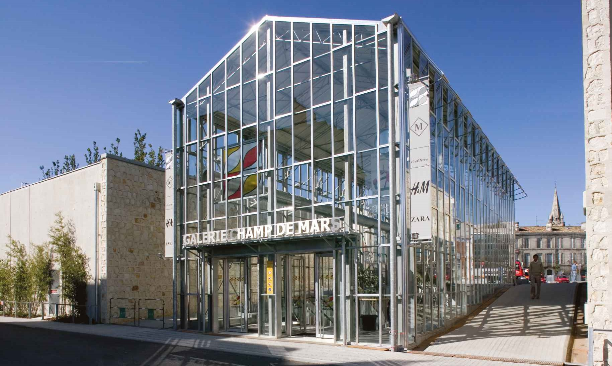

Survolez l'image et agrandissez/réduisez la vue à l'aide de la molette.
Budget: 38 462 000€ HT
Surface: 25 500m²
Date début: 2003
Date fin: 2007
Maîtrise d'ouvrage: SEGECE (pour le centre commercial, le parking et les logements)
Co-traitant(s): Atelier et Bureau Alexandre Chemetoff
Description:
L’enjeu de ce programme de la ville contemporaine était de parvenir à s’insérer au cœur de la ville historique, sur un terrain de roches calcaires en dénivelé, situé sur le plateau haut d’Angoulême. Dans la tradition des places de cette ville, le nouvel espace public du Champ-de-Mars est une sorte de balcon qui donne sur la vallée de la Charente et couvre la surface de l’ensemble commercial et des parkings.
Trois serres posées sur la place introduisent au mail desservant
les commerces, situés au niveau inférieur. Les parkings sont obtenus par le creusement du terrain et la roche calcaire du site devient parois. L’immeuble de logements, quant à lui, émerge sur la surface de la place, du côté de la vallée.
Les matériaux du projet réinterprètent ou réutilisent ceux du site : le béton sablé incorpore le gravier local, les murs de pierres coffrés s’inspirent des murs
des remparts de la ville... Le projet prend forme à partir du jeu et de l’exploitation extrême
du terrain et de l’histoire du lieu.
{kind=link}
{kind=link}
{kind=link}
{kind=link}